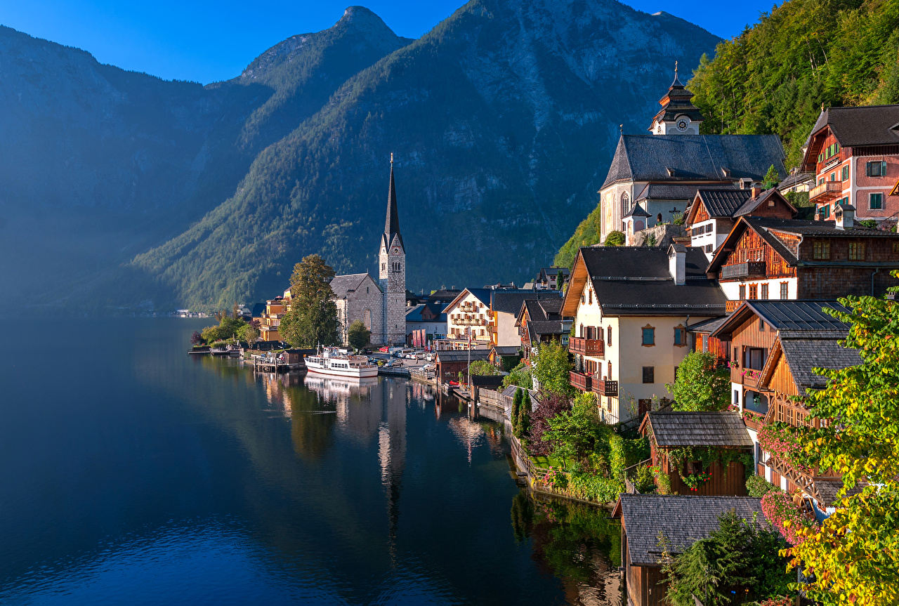
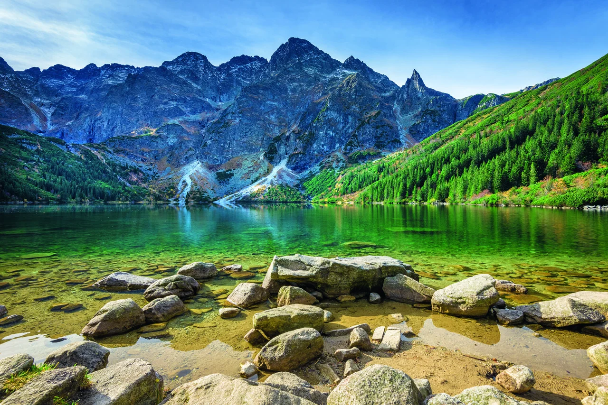
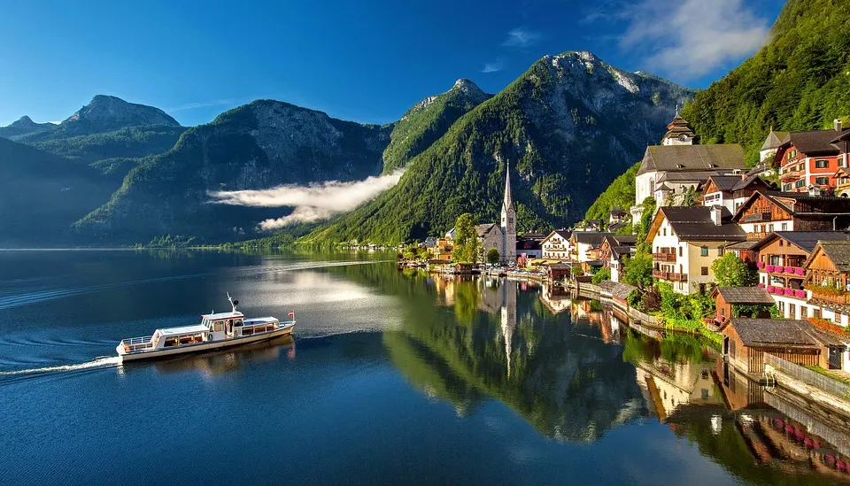
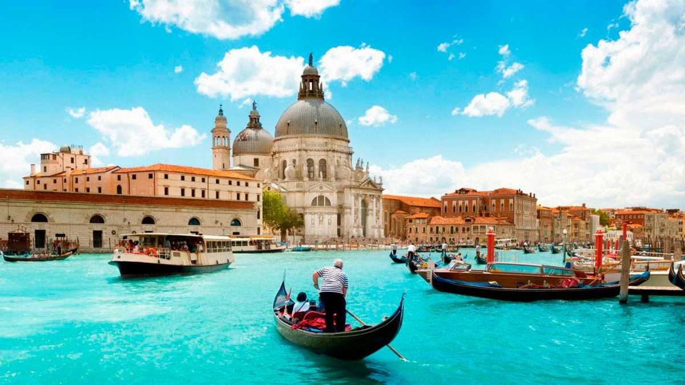
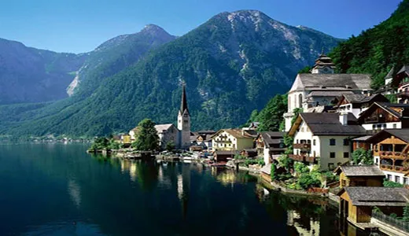
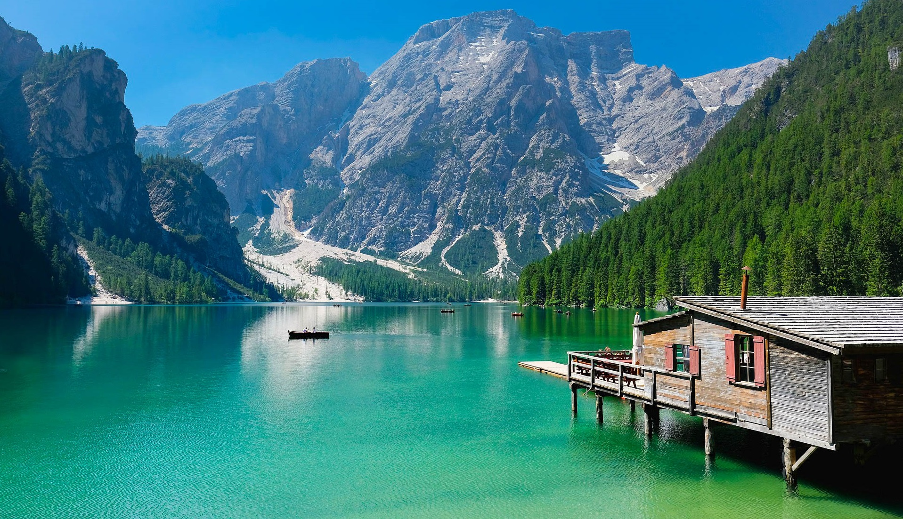
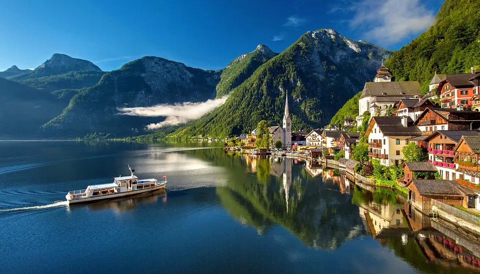
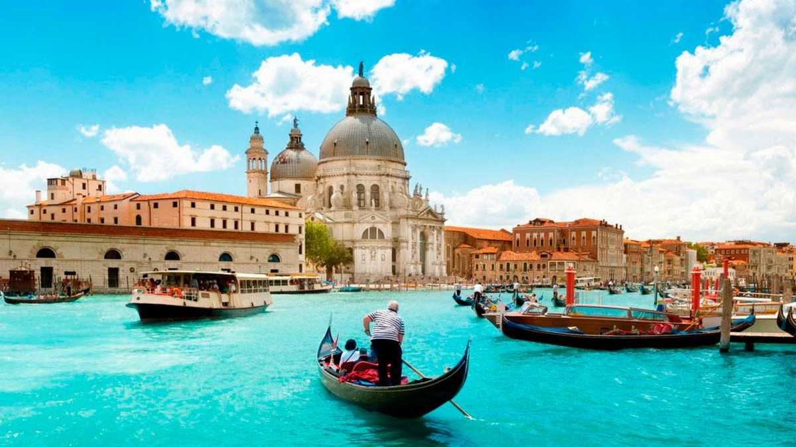
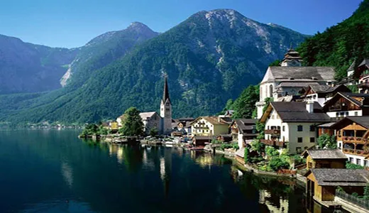
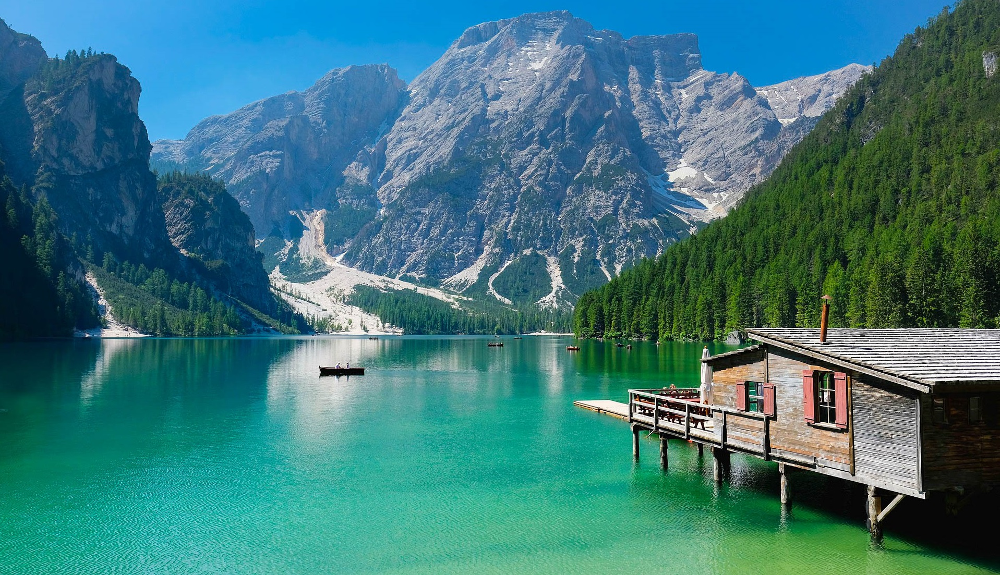

The Ultimate Ski Trip Is Back: 3 Ways to Conquer the Alps
Ski vacations in the European Alps are viable again. Consider these invigorating options, from a private-jet spin around France to off-the-grid adventures in the Italian Alps. LAST WINTER, American skiers hoping to hit Europe’s alpine slopes were out of luck, with most borders across the Continent still sealed shut. This season, now that most countries have reopened, vacations to the epicenter of ski culture and heritage are back on the menu. Booking for ski trips soared in the fall, as people started planning their winter getaways.
 According to Dan Sherman, chief managing officer for Ski.com, a ski-vacation booking site, the number of trips scheduled for Europe surpassed pre-pandemic levels by 14%. In December, with the spread of the Omicron variant, bookings dipped but still remained relatively high—just 2% lower than in December 2019. “Many skiers who weren’t able to travel last winter are letting nothing get between them and a chairlift this year,” he said.
 






